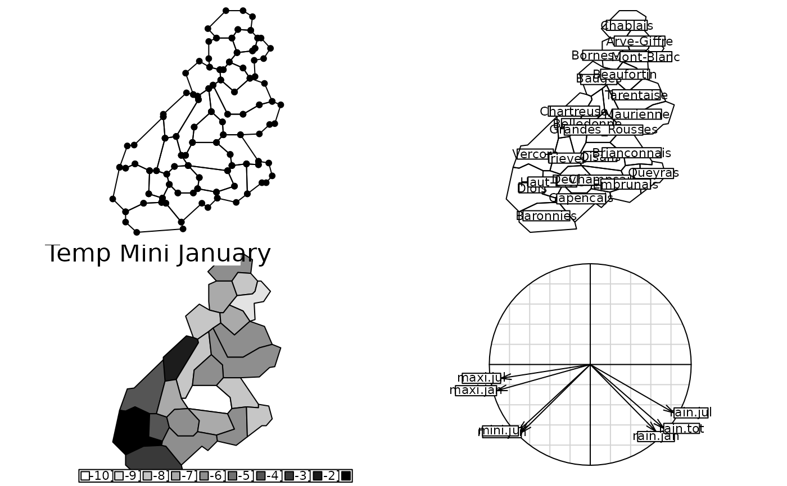

Small Ecological Dataset
atlas.Rdatlas is a list containing three kinds of information about 23 regions (The French Alps) :
geographical coordinates, meteorology and bird presences.
Usage
data(atlas)Format
atlas is a list of 9 components:
- area
is a convex hull of 23 geographical regions.
- xy
are the coordinates of the region centers and altitude (in meters).
- names.district
is a vector of region names.
- meteo
is a data frame with 7 variables: min and max temperature in january; min and max temperature in july; january, july and total rainfalls.
- birds
is a data frame with 15 variables (species).
- contour
is a data frame with 4 variables (x1, y1, x2, y2) for the contour display of The French Alps.
- alti
is a data frame with 3 variables altitude in percentage [0,800], ]800,1500] and ]1500,5000].
- Spatial
is the map of the 23 regions of The French Alps (an object of the class
SpatialPolygonsofsp).- Spatial.contour
is the contour of the map of the 23 regions of the French Alps (an object of the class
SpatialPolygonsofsp).
Source
Extract from:
Lebreton, Ph. (1977) Les oiseaux nicheurs rhonalpins. Atlas ornithologique Rhone-Alpes.
Centre Ornithologique Rhone-Alpes, Universite Lyon 1, 69621 Villeurbanne.
Direction de la Protection de la Nature, Ministere de la Qualite de la Vie. 1–354.
Examples
data(atlas)
if(adegraphicsLoaded()) {
if(requireNamespace("sp", quietly = TRUE)) {
g11 <- s.Spatial(atlas$Spatial, pSp.col = "white", plot = FALSE)
g12 <- s.label(atlas$area[, 2:3], plabels.cex = 0, plot = FALSE)
g1 <- superpose(g11, g12, plot = FALSE)
g2 <- s.label(atlas$xy, lab = atlas$names.district, Sp = atlas$Spatial,
pgrid.dra = FALSE, pSp.col = "white", plot = FALSE)
obj3 <- sp::SpatialPolygonsDataFrame(Sr = atlas$Spatial, data = atlas$meteo)
g3 <- s.Spatial(obj3[, 1], nclass = 12, psub = list(position = "topleft",
text = "Temp Mini January", cex = 2), plot = FALSE)
g4 <- s.corcircle((dudi.pca(atlas$meteo, scann = FALSE)$co), plabels.cex = 1, plot = FALSE)
G1 <- ADEgS(list(g1, g2, g3, g4), layout = c(2, 2))
obj5 <- sp::SpatialPolygonsDataFrame(Sr = atlas$Spatial,
data = dudi.pca(atlas$meteo, scann = FALSE)$li)
g5 <- s.Spatial(obj5[, 1], nclass = 12, psub = list(position = "topleft",
text = "Principal Component Analysis analysis", cex = 1.5), plot = FALSE)
coa1 <- dudi.coa(atlas$birds, scann = FALSE, nf = 1)
obj6 <- sp::SpatialPolygonsDataFrame(Sr = atlas$Spatial, data = coa1$li)
g6 <- s.Spatial(obj6[, 1], nclass = 12, psub = list(position = "topleft",
text = "Correspondence analysis", cex = 1.5), plot = FALSE)
g7 <- s.value(atlas$xy, coa1$li$Axis1, Sp = atlas$Spatial.contour, ppoints.cex = 2,
porigin.include = FALSE, paxes.draw = FALSE, pSp.col = "white", plot = FALSE)
g8 <- triangle.label(atlas$alti, plabels.cex = 0, plot = FALSE)
G2 <- ADEgS(list(g5, g6, g7, g8), layout = c(2, 2))
}
} else {
op <- par(no.readonly = TRUE)
par(mfrow = c(2, 2))
area.plot(atlas$area, cpoin = 1.5)
area.plot(atlas$area, lab = atlas$names.district, clab = 1)
x <- atlas$meteo$mini.jan
names(x) <- row.names(atlas$meteo)
area.plot(atlas$area, val = x, ncl = 12, sub = "Temp Mini January", csub = 2, cleg = 1)
s.corcircle((dudi.pca(atlas$meteo, scann = FALSE)$co), clab = 1)
area.plot(atlas$area, val = dudi.pca(atlas$meteo,scann=FALSE)$li[, 1], ncl = 12,
sub = "Principal Component Analysis analysis", csub = 1.5, cleg = 1)
birds.coa <- dudi.coa(atlas$birds, sca = FALSE, nf = 1)
x <- birds.coa$li$Axis1
area.plot(atlas$area, val = x, ncl = 12, sub = "Correspondence analysis", csub = 1.5, cleg = 1)
s.value(atlas$xy, x, contour = atlas$contour, csi = 2, incl = FALSE, addax = FALSE)
triangle.plot(atlas$alti)
par(op)
par(mfrow = c(1, 1))}
